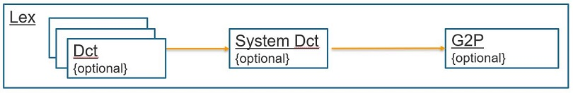

LEXICON CONFIGURATION OPTIONS
OVERVIEW
The lexicon specifies how phonemes are retrieved. It groups one or more transcription providers for transcription lookup. The following section describe configurations for these providers.
OPTIONS
Below are the elements that a lexicon may contains. It is important to note that all elements are optional. A lexicon with only dictionaries or only a CLC is a valid lexicon. The lookup order is the following:
CLC (Common Linguistic Component):
Here is a lexicon configuration example with only CLC:
{
"version": "VoConHigh 5.0",
"lexicon": {
"name": "ENU_LEXICON",
"clc": {
"dict": [
{
"type": "static",
"static": {
"filepath": {
"vh_callback": {
"name": "filepath",
"type": "string",
"default": "//home//usr/data/dict//enu_artist.dcb"
}
}
}
],
"filename": "clc_enu_cfg3_v6_0_2.dat",
"vocon_parameters": {
"LH_CLC_PARAM_NUMBER_OUTPUT_TRANSCRIPTIONS": 5
}
}
}
}
name- Optional, it specify the name of the lexicon.
clcOptional block to specify the clc buffer file to use. It has the following possible keys:
filename: Mandatory key. It specify the clc buffer to use.dict, exception_dictionary, ruleset, vocon_parameters: Optional keys. For more details see following sections.id_dictionary: Optional key. See the following sub section Identifier dictionary.
Identifier dictionary
Phonetic transcriptions can be retrieved via identifiers using a so called identifier dictionary. An identifier dictionary can be loaded onto a CLC using the id_dictionary property. The following JSON shows the optional id_dictionary configuration:
{
...
"clc": {
...
"id_dictionary": {
"filename": "<foo_filename>",
"compatibility_string": "<foo_compatibility_string>"
}
}
}
filename: Mandatory key, specifying the filename of the identifier buffer.
compatibility_string: Optional key. A string value to check the identifier buffer’s compatibility.
This string can also be given via callback.
When the key id_dictionary is specified, Cerence ASR looks up phonetic transcriptions via the transcription identifier first.
If no transcriptions are found in the identifier dictionary, Cerence ASR falls back to retrieve transcriptions from the CLC.
User Dictionaries before CLC:
It is possible to add a user_word_dictionary. To look up a transcription, the lexicon looks in the user word dictionary, and then the CLC.:
{
"version": "VoConHigh 5.0",
"lexicon": {
"name": "ENU_LEXICON",
"user_word_dictionary" : "userwords.dcb",
"clc": {
"filename": "clc_enu_cfg3_v6_0_2.dat",
"vocon_parameters": {
"LH_CLC_PARAM_NUMBER_OUTPUT_TRANSCRIPTIONS": 5
}
}
}
}
``user_word_dictionary``
Optional, may contain a user word dictionary that has been created in the "usw" folder specified in the asr_paths configuration file.
Note: currently user_word_dictionary in lexicon doesn't support.
CLC cache
Structured transcriptions (potentially used by all DCCs) can be cached via the so called CLC cache. A CLC cache can be configured like in the following JSON example:
{
"version" : "VoConHigh 5.0",
"lexicon" : {
"name" : "LEX_ENU_WITH_CLC_CACHE",
"output_languages" : {
"acmod" : "acmod3_5500_enu_ml_car_f16_v1_0_0.dat"
},
"clc" : {
"filename" : "clc_enu_mpthreevadml_v6_0_1.dat",
"clc_cache" : "clc_cache_enu_mpthreevadml.dat"
}
}
}
clc_cacheOptional key containing a filename with an already existing CLC cache archive. When the file does not exist or the filename is an empty string an empty CLC cache is created. When the lexicon is destroyed the CLC cache is archived to the file any existing file is overwritten. When an empty string was given the CLC cache is not archived. The search path to the CLC cache archive must be configured in the asr_path as shown in the following JSON example:
{ "version" : "VoConHigh 5.0", "asr_paths" : { "asr" : "../../binary_sdk/dat", "clc" : "../data/clc", "clc_cache" : "./tmp_cache", "acmod" : "../data/acmod" } }
Furthermore the cache size can be configured with the ASR parameter LH_CLC_PARAM_CACHE_SIZE.
By default the cache size is 1 MB.
Remark: there is only one CLC cache for all domain categories.
LEX cache
Non-Structured transcriptions (potentially used by all DCCs) can be cached via the so called LEX cache. If defined, to look up a transcription, the lexicon looks in LEX cache file, and then the CLC A LEX cache can be configured like in the following JSON example:
{
"version": "VoConHigh 5.0",
"lexicon": {
"name": "ENU_LEXICON",
"user_word_dictionary" : "userwords.dcb",
"clc": {
"filename": "clc_enu_cfg3_v6_0_2.dat",
"vocon_parameters": {
"LH_CLC_PARAM_NUMBER_OUTPUT_TRANSCRIPTIONS": 5
}
},
"lex_cache" : {
"persist" : true,
"cache_word_size" : 1000
}
}
}
``lex_cache``
Optional key containing filenames with an already existing LEX cache archive.
When the file does not exist or the filename is an empty string an empty LEX cache is created.
When the lexicon is destroyed the LEX cache is archived to the file any existing file is overwritten.
The name pattern of LEX cache archive file is, "lexicon name"_"dcc name"_"domain_catetory".lxc, take above
json as an example, if a DCC named "DCC_PHONE" using lexicon "ENU_LEXICON" to do data preparation, and if
the name of the domain category is "contact", then the lex cache file would be, "ENU_LEXICON_DCC_PHONE_contact.lxc".
The max size of the cache file can be configured with "cache_word_size", if this key is missing, or if value of this key is
-1, there is no size limitation.
The search path to the LEX cache archive must be configured in the asr_path as shown in the following JSON example::
{
"version" : "VoConHigh 5.0",
"asr_paths" : {
"asr" : "../../binary_sdk/dat",
"clc" : "../data/clc",
"lex_cache" : "./lex_cache",
"acmod" : "../data/acmod"
}
}
Output language
It is possible to set the output languages. The output languages are either specified by the language strings (ex. “string”: [“ENU”, “FRF”, …]), or by specifying an acmod, so that the phonetics that are generated are compatible with the acmod.:
{
"version": "VoConHigh 5.0",
"lexicon": {
"name": "ENU_LEXICON",
"output_languages": {
"acmod": "acmod4_900_enu_gen_car_f16_v1_0_0.dat"
},
"clc": {
"filename": "clc_enu_cfg3_v6_0_2.dat",
"vocon_parameters": {
"LH_CLC_PARAM_NUMBER_OUTPUT_TRANSCRIPTIONS": 5
},
}
}
}
It is important to note that output_languages block is only used through ILexicon api. When the lexicon is used in a dynamic content consumer, the output_language block will be ignored and the output language will be set to match the acmod used in that dynamic content consumer.
Setting dictionary/rules on the CLC
As mentioned before, there is also the option to set the dictionary directly on the CLC buffer and add specific rules:
{
"version": "VoConHigh 5.0",
"lexicon": {
"name": "ENU_LEXICON",
"clc": {
"filename": "clc_enu_cfg3_v6_0_2.dat",
"vocon_parameters": {
"LH_CLC_PARAM_NUMBER_OUTPUT_TRANSCRIPTIONS": 5
},
"dict": [
{
"type": "static",
"static": {
"filename": "artist.dcb",
"lookup_strategy": "LH_CLC_DCTLOOKUP_USE_LID"
},
{
"type": "static",
"static": {
"filename": "album.dcb",
"lookup_strategy": "LH_CLC_DCTLOOKUP_IGNORE_LID"
},
{
"type": "static",
"static": {
"filename": "title.dcb"
}
],
"exception_dictionary": "acmod4_900_enu_gen_car_f16_v1_0_0.dat",
"ruleset": [
"ruleset1.txt",
"ruleset2.txt"
]
}
}
}
If you configure one or more rulesets the clc_ruleset location
should be specified in the asr_paths configuration file.
Note that for the dictionary block, the filename is mandatory. The lookup_strategy is optional though. It is set to LH_CLC_DCTLOOKUP_USE_LID in case not specified. The other possible value is LH_CLC_DCTLOOKUP_IGNORE_LID. This make the lookup independent of the input language.
LOGGING TRANSCRIPTIONS
The application can configure the logger to log the transcriptions.
The module that logs the transcription is called nuance.asr.LexiconLogger and it uses
the zone LOG_INFO.
An example log configuration is as follows:
"logger" : {
"consumers" : [
{
"name" : "text to file",
"output" : "./LexiconLogger.log",
"modules" : "nuance.asr.LexiconLogger",
"zones" : "LOG_INFO"
}
]
}
The nuance.asr.LexiconLogger logs the data in table format. The first line contains the header of the table, each row
contains one transcription.
The columns are, in the order as they appear in the table:
lexicon name- The lexicon name as given in the json configuration. This can be empty if the lexicon has no name. E.g. when the lexicon is configured inside the dynamic content consumer.
user name- The name of the component that uses the lexicon, i.e. name of the Dynamic Content Consumer as given in the JSON configuration. This string will be empty if you use the ILexicon API.
orthography- The orthography of the word for which the lexicon will provide transcriptions
domain category- The domain category used for the transcription look-up. For the dynamic content consumer this is configured in the JSON config. For the ILexicon API this is passed via the API.
nbr/total of words- The index of the current word and the total number of words the orthography is split into.
word orthography- A split orthography
normalized word orthography- The normalized orthography as it is generated by the internal grapheme to phoneme engine (CLC).
nbr/total of trans- If there are multiple transcriptions, each transcription is logged in as separate row. This field contains the current transcription index and the total number of transcriptions.
language Code- The 3 letter language code that correspond to the output language of the generated phonetics. This language code is only filled when a transcription lookup is done for a fuzzy match context. For all other types of contexts this field is empty.
LH_TRANSTYPEThe type of the transcription. Possible values are:
- LH_TRANSTYPE_PHONETIC
- The transcription is a L&H+ phonetic transcription. This is encoded in ASCII.
- LH_TRANSTYPE_USERWORD
- A transcription that is obtained from a user word training. The transcription data is binary data,
the actual binary data will not be logged, instead of this the transcriptions column will contain
the string:
`binary data. This type of transcription is linked to a particular acoustic model. - LH_TRANSTYPE_TEXT_STRING
- Orthographic text (can be used for “sounds like”, abbreviations, etc…)
- LH_TRANSTYPE_SPEECHUNITS
- Speech Unit transcriptions [Advanced Use only]. The transcription data is binary data,
the actual binary data will not be logged, instead of this the transcriptions column will contain
the string:
`binary data. This type of transcription is linked to a particular acoustic model.
transcription- The actual transcription. In cases where the transcription contains binary data, this field contains
the string
binary data. In case the transcription type isLH_TRANSTYPE_PHONETICit contains the L&H+ phonetic transcription.
An example of logged transcriptions is:
lexicon name | user name | orthography | domain category | nbr/total of words | word orthography | normalized word orthography | nbr/total of trans | language code | LH_TRANSTYPE | transcription
LEX_ENU_WITH_TN | DCC_SLM_FM_MUSIC | Nirvana | normal | 1/1 | Nirvana | nirvana | 1/1 | | LH_TRANSTYPE_PHONETIC | #nIR+.'vA.n$#
LEX_ENU_WITH_TN | DCC_SLM_FM_MUSIC | Punkstuff | normal | 1/1 | Punkstuff | punkstuff | 1/2 | | LH_TRANSTYPE_PHONETIC | #p'^nKkst^f#
LEX_ENU_WITH_TN | DCC_SLM_FM_MUSIC | Punkstuff | normal | 1/1 | Punkstuff | punkstuff | 2/2 | | LH_TRANSTYPE_PHONETIC | #p'^nKkst$f#
LEX_ENU_WITH_TN | DCC_SLM_FM_MUSIC | Pink Floyd | normal | 1/2 | Pink | pink | 1/1 | | LH_TRANSTYPE_PHONETIC | #'pInKk#
LEX_ENU_WITH_TN | DCC_SLM_FM_MUSIC | Pink Floyd | normal | 2/2 | Floyd | floyd | 1/1 | | LH_TRANSTYPE_PHONETIC | #'flO&Id#